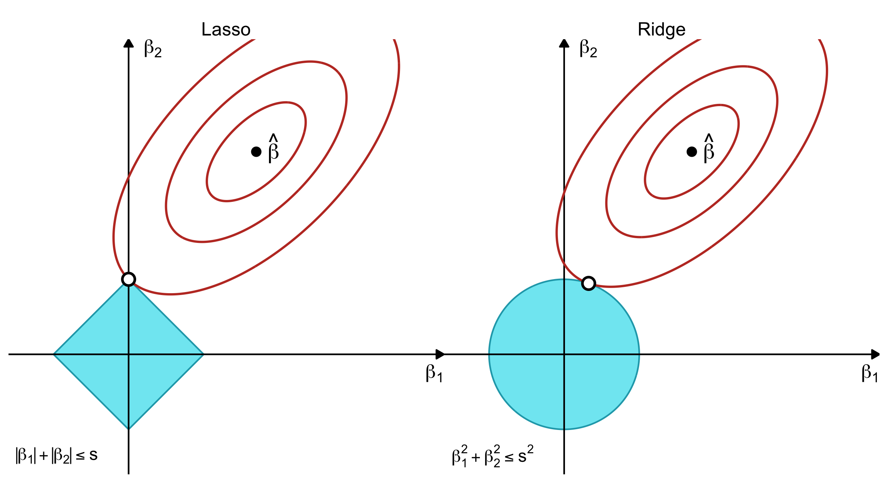
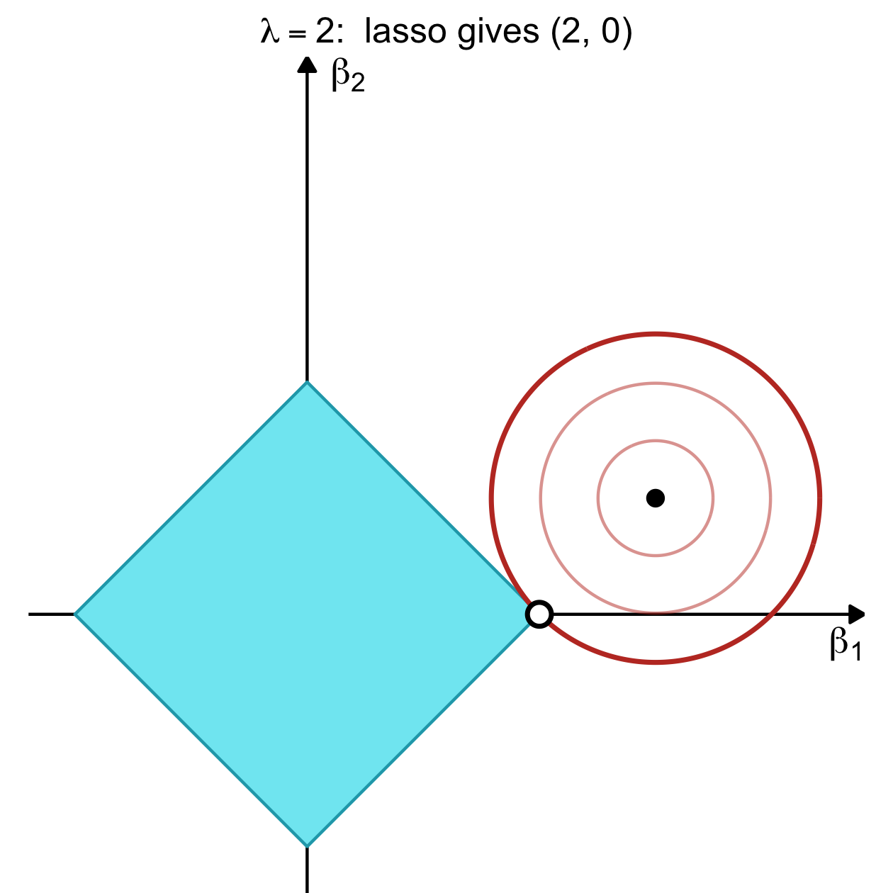
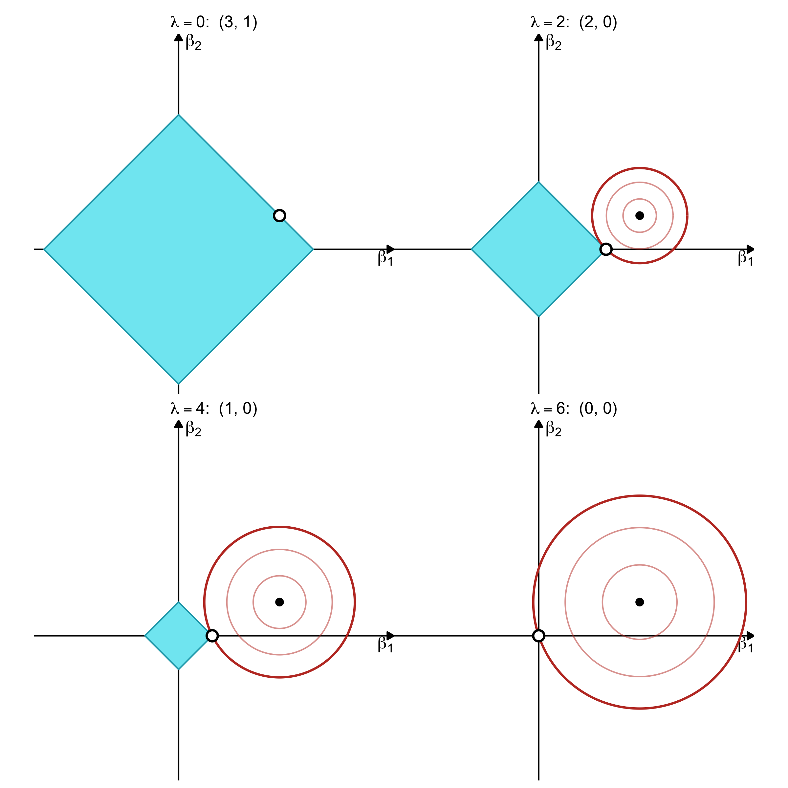
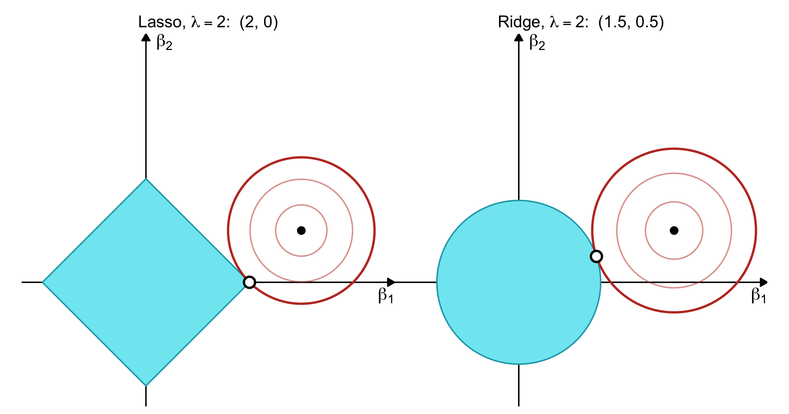

Reading — Lasso and ridge in a picture
This page has no code to write. Read it before Exercise 5.5. It explains one picture that you will meet in almost every textbook on regularisation, and it shows why the lasso can set a coefficient to exactly zero while ridge cannot.
The two penalties
An ordinary linear regression chooses the coefficients that give the lowest training MSE. Lasso and ridge add a price for large coefficients. With two predictors, they choose the pair \((\beta_1, \beta_2)\) that minimises
\[\text{Lasso:}\quad \text{MSE} + \lambda\,\big(|\beta_1| + |\beta_2|\big) \qquad\qquad \text{Ridge:}\quad \text{MSE} + \lambda \times \tfrac{1}{2}\big(\beta_1^2 + \beta_2^2\big)\]
You choose \(\lambda\). With \(\lambda = 0\) there is no price, and you get the ordinary fit, written \(\hat\beta\). The larger \(\lambda\) is, the more the coefficients are pulled towards zero.
The picture
Each point of the plane below is one possible pair \((\beta_1, \beta_2)\).
- The black dot \(\hat\beta\) is the ordinary fit: the pair with the lowest training MSE.
- The red curves are contours of the training MSE, like the contour lines of a map. Every pair on one curve has the same MSE, and the MSE grows as you move outwards from \(\hat\beta\). They are ellipses here because the two predictors are correlated.
- The blue shape holds every pair whose penalty is no more than a budget \(s\). For the lasso, \(|\beta_1| + |\beta_2| \le s\) is a diamond. For ridge, \(\beta_1^2 + \beta_2^2 \le s^2\) is a circle.
- The white dot is the fitted model: the first point where a red curve, growing outwards from \(\hat\beta\), touches the blue shape.
The fitted model is the pair with the lowest MSE that stays within the budget. On the left, the first touch is at the top corner of the diamond, so \(\beta_1 = 0\): the lasso has dropped the first predictor. On the right, the circle has no corners, and the first touch is at a point where both coefficients are smaller than in \(\hat\beta\) but neither is zero.
The penalty \(\lambda\) and the budget \(s\) are two descriptions of the same fit. We choose \(\lambda\) and fit the model. Adding up the absolute values of the fitted coefficients then gives \(s\), which tells us how big to draw the diamond. The worked example below does exactly that.
A worked example with four patients
To keep the arithmetic small, take four patients and two predictors that have already been standardised.
| Patient | \(x_1\) | \(x_2\) | \(y\) |
|---|---|---|---|
| A | 1 | 1 | 4 |
| B | 1 | −1 | 2 |
| C | −1 | 1 | −2 |
| D | −1 | −1 | −4 |
Every column averages 0, so the model needs no intercept: \(\hat y = \beta_1 x_1 + \beta_2 x_2\). The ordinary fit is \((3, 1)\), which predicts all four \(y\) values exactly, so its MSE is 0.
Step 1 — The red contours
For any pair \((\beta_1, \beta_2)\), predict the four \(y\) values and average the squared residuals. With these data, the calculation simplifies to
\[\text{MSE} = (3 - \beta_1)^2 + (1 - \beta_2)^2 .\]
So in this example the red contours are circles centred at \((3, 1)\). The farther out we go, the higher the training MSE. (They are circles rather than ellipses because \(x_1\) and \(x_2\) are uncorrelated here.)
Step 2 — Choose \(\lambda\) and fit the lasso
Set \(\lambda = 2\). The lasso chooses the pair that minimises training MSE plus \(2 \times\) the sum of the absolute coefficients. Here is how a few candidate pairs compare.
| Candidate \((\beta_1, \beta_2)\) | Training MSE | \(|\beta_1| + |\beta_2|\) | Total at \(\lambda = 2\) |
|---|---|---|---|
| \((3, 1)\), the ordinary fit | 0 | 4 | 8 |
| \((2, 1)\) | 1 | 3 | 7 |
| \((2, 0)\), the lasso fit | 2 | 2 | 6 |
| \((1, 0)\) | 5 | 1 | 7 |
| \((0, 0)\) | 10 | 0 | 10 |
Take the move from \((2, 1)\) to \((2, 0)\). Setting \(\beta_2\) to zero increases the training MSE by 1 but saves 2 in penalty, so the total drops from 7 to 6. Moving farther towards zero, to \((1, 0)\), increases the MSE by 3 and saves only 2, so the total goes back up.
Step 3 — Draw the diamond from the fitted coefficients
The winner, \((2, 0)\), uses a budget of \(s = |2| + |0| = 2\). Draw the diamond holding all pairs whose absolute coefficients add up to at most 2. Its four corners are \((2, 0)\), \((0, 2)\), \((-2, 0)\) and \((0, -2)\).

Now picture a red circle growing outwards from \((3, 1)\). The first touch is at \((2, 0)\), the right-hand corner of the diamond. Why? If a point inside the diamond had a lower MSE, it would also have an equal or smaller penalty, and so it would have beaten \((2, 0)\) in the lasso fit.
Step 4 — Turn up \(\lambda\) and watch the diamond shrink
| \(\lambda\) | Lasso fit \((\hat\beta_1, \hat\beta_2)\) | \(s = |\hat\beta_1| + |\hat\beta_2|\) | The diamond reaches |
|---|---|---|---|
| 0 | \((3, 1)\) | 4 | 4 units along each axis |
| 2 | \((2, 0)\) | 2 | 2 units along each axis |
| 4 | \((1, 0)\) | 1 | 1 unit along each axis |
| 6 | \((0, 0)\) | 0 | Only the origin |
At \(\lambda = 4\), the move from \((2, 0)\) to \((1, 0)\) still increases the MSE by 3, but now it saves 4 in penalty. That is why the stronger penalty favours the smaller coefficient and gives a smaller diamond.

Read the panels in order. \(\beta_2\) reaches zero first, at \(\lambda = 2\), and \(\beta_1\) follows at \(\lambda = 6\). At \(\lambda = 0\) there is no penalty, and the diamond simply passes through the ordinary fit. The lasso has dropped the weaker predictor first. With many predictors, this is how the lasso selects variables.
The same example with ridge
Keep \(\lambda = 2\), but use the ridge penalty \(\lambda \times \tfrac{1}{2}(\beta_1^2 + \beta_2^2)\). The last two columns compare ridge with the lasso for the same candidates.
| Candidate \((\beta_1, \beta_2)\) | Training MSE | Ridge penalty | Ridge total | Lasso total |
|---|---|---|---|---|
| \((3, 1)\), the ordinary fit | 0 | 10 | 10 | 8 |
| \((2, 0)\) | 2 | 4 | 6 | 6 |
| \((1.5, 0.5)\) | 2.5 | 2.5 | 5 | 6.5 |
| \((1, 0)\) | 5 | 1 | 6 | 7 |
| \((0, 0)\) | 10 | 0 | 10 | 10 |
The lasso’s winner, \((2, 0)\), loses under ridge. Ridge prefers \((1.5, 0.5)\), which keeps both coefficients. Squaring makes small coefficients very cheap: a coefficient of 0.5 adds only \(0.5^2 = 0.25\) before \(\lambda\) is applied, so there is little to gain by pushing it all the way to zero.

Turning up \(\lambda\) shrinks the ridge circle, but the fit never lands on an axis:
| \(\lambda\) | Ridge fit \((\hat\beta_1, \hat\beta_2)\) | Lasso fit \((\hat\beta_1, \hat\beta_2)\) |
|---|---|---|
| 0 | \((3, 1)\) | \((3, 1)\) |
| 2 | \((1.5, 0.5)\) | \((2, 0)\) |
| 6 | \((0.75, 0.25)\) | \((0, 0)\) |
| 18 | \((0.3, 0.1)\) | \((0, 0)\) |
In this tidy example, with uncorrelated predictors, there is a simple pattern. Ridge divides both coefficients by the same number, \(1 + \lambda/2\), so they get smaller but never reach zero. The lasso subtracts the same amount, \(\lambda/2\), from each coefficient’s size and stops at zero, so the smaller coefficient reaches zero first. With correlated predictors the arithmetic is messier, but the pictures tell the same story.
Why the corners matter
The diamond’s corners lie on the axes, and every point on an axis has one coefficient equal to zero. A red contour arriving from many directions meets a corner before it meets an edge. A circle has no corners, so a first touch exactly on an axis would be a coincidence. With ten predictors the diamond becomes a shape in ten dimensions with many corners and edges, each one a place where some of the coefficients are exactly zero. That is why the lasso often keeps only a handful of predictors, while ridge keeps them all.
Before you start Exercise 5.5
- Logistic regression. In Exercise 5.5 the model is a logistic regression, so the red contours show the log-loss rather than the MSE. The picture and its conclusion are the same.
- Standardise first. The penalty treats every coefficient alike. A coefficient for age per year is ten times smaller than the same coefficient for age per decade, so without standardising, the penalty would depend on the units you happened to choose.
- Coefficient paths. In Exercise 5.5 you will draw the coefficients against \(\lambda\). Each value of \(\lambda\) on those plots is one picture like the ones above. The lasso lines hit zero one by one, like \(\beta_2\) and then \(\beta_1\) here. The ridge lines bend towards zero but never reach it.
TipKey points
- Lasso and ridge minimise the training misfit plus \(\lambda\) times a penalty on the coefficients.
- Each fit can be drawn as the first touch between the misfit contours and a budget shape: a diamond for the lasso, a circle for ridge.
- The diamond has corners on the axes, so the lasso can set coefficients exactly to zero and select predictors. Ridge shrinks every coefficient and drops none.
- A larger \(\lambda\) means a smaller budget \(s\), and so a smaller shape.